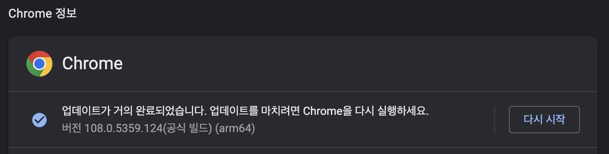
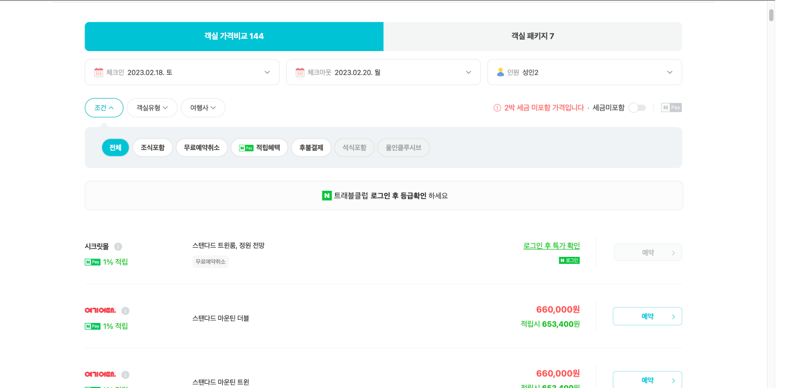
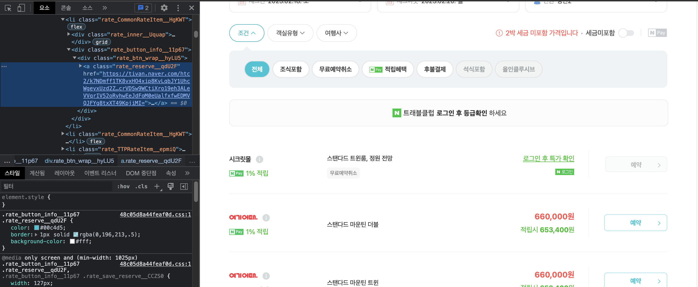
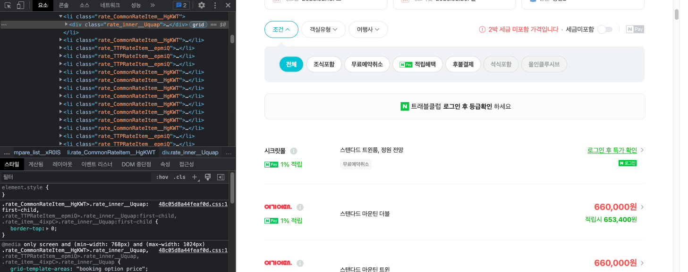

회사에서 필요한 데이터를 수집 및 가공하는 과정에서 python으로 크롤링을 하게된 적이 있었다. 이 때 다양한 문제들을 접할 수 있었는데, 그 과정에서 얻어낸 정보들을 정리하기로 결심했다.
⚠️ 해당 사이트가 정보 수집에 관하여 열려있는 지 우선 확인하자. robots.txt를 참조하면 해당 사이트의 정책 및 권한을 확인할 수 있다. 또한 잦은 크롤링은 해당 서비스에 부하를 줄 수 있으므로 내가 찾으려는 정보가 API 식으로 제공이 되는 지 또한 확인해보자.
크롤링 준비
크롤링을 하기 전에 환경을 먼저 구성하자. 본인의 크롤링 상황에 적합한 라이브러리를 선택하고 확장성을 고려하자.
가상 환경 VS 로컬
반드시 가상 환경에서 크롤링을 진행할 필요는 없다. 그렇지만 필자는 다음과 같은 이유로 크롤링을 위한 가상 환경을 준비한다.
- 크롤링을 하는 동안, 다른 작업을 하기 껄끄러울 수 있다.
- 이전에 처리해야할 데이터가 너무 많아 로컬에서
Multi-Processing을 진행했더니, 다른 작업을 하기 어려웠다.
- 이전에 처리해야할 데이터가 너무 많아 로컬에서
- 프로젝트 의존성 같은 걸 고려하지 않아도 된다.
- 혹 나 말고도 다른 팀원들이 사용할 코드라면, 가상 환경에 프로젝트를 설정해두는 것이 사용에 편리할 수 있다.
혹 접근이 차단될 수도 있다…
필자는 여러 크롤링 과정에서 다음과 같은 도구들을 활용했다.
- Google Colab
- 구글에서 제공하는 도구로
Jupyter Notebook실행을 위한 가상 환경을 제공한다. 무료로 이용할 수 있으며 약간 불편한 점도 있으나, 본인의 프로젝트가 간단한 것이라면Colab또한 좋은 접근성과 편리성을 제공한다.
- 구글에서 제공하는 도구로
- Cloud Server
- 마침 Naver Cloud에 남은 credit이 있어 서버 인스턴스를 열어 크롤링을 한 적이 있다. 당시에 시간 요금제로 짧고 굵게 크롤링을 할 수 있었다.
Selenium
크롤링 방법들을 찾아보다 보면 매우 자주 보이는 라이브러리이다. Selenium은 웹 어플리케이션을 테스트하기 위한 자동화 도구라고 한다. 그렇지만 크롤링에 있어 매우 유용한 라이브러리다.
Selenium의 필요성
만약 크롤링하려는 페이지가 단순히 정적 HTML을 제공한다던가, 내가 원하는 정보가 해당 페이지의 HTML에 직접적으로 적혀 있다면 Selenium을 사용할 필요가 없다. 그렇다면 BeautifulSoup 과 같은 HTML Parsing 라이브러리를 통해 더 쉽고 빠르게 정보를 가져올 수 있다.
그치만 대부분의 경우엔 내가 수집하려는 정보가 비동기로 호출되거나, 특정 인터랙션을 통해 생성되는 정보일 것이다. 그렇다면 단순히 해당 페이지의 HTML을 가져오는 것으로는 정보를 추출할 수 없다.
이럴 때 사용되는 라이브러리가 Selenium이며, Selenium을 통해 브라우저를 마치 내가 직접 사이트를 이용하는 것 처럼 인간적이게(?) 크롤링을 시킬 수 있다.
Selenium 준비
우선 Selenium으로 구동시킬 브라우저를 준비하자. 나는 이번 프로젝트에 Chrome 브라우저를 사용했으며, 해당 브라우저를 구동시킬 드라이버 또한 다운 받았다. 브라우저 버전과 드라이버의 버전이 일치해야 한다.
- Chrome 버전 확인
- Chrome → 설정 → Chrome 정보 탭

- Chrome 드라이버 다운 ChromeDriver - WebDriver for Chrome - Downloads 프로젝트의 폴더에 해당 드라이버를 넣어주자
pip를 통해 python에서 Selenium을 쓸 수 있도록 설치하자
Selenium설치pip install Selenium
크롤링 시작
준비를 마쳤다면 본격적으로 크롤링을 시작해보자.
Selenium 시작
우선 Selenium으로 브라우저를 구동 시켜보자. 확장성을 고려하여 함수를 선언해 호출하자. 모든 코드는 python으로 작성되었다.
1
2
3
4
5
6
7
8
9
10
11
12
13
14
15
16
17
18
19
20
21
from selenium import webdriver
def openBrowser():
driverOptions = webdriver.ChromeOptions()
# driverOptions.add_argument('headless') # 브라우저를 띄우지 않고 실행. linux라면 필수.
# driverOptions.add_argument('disable-gpu') # GPU 사용 안하도록 설정
# driverOptions.add_argument('--no-sandbox')
driverOptions.add_argument('lang=ko_KR') # 언어 설정
driverOptions.add_argument('--disable-dev-shm-usage') # 공유 메모리를 담당하는 디렉토리를 사용하지 않겠다는 의미이다.
driverOptions.add_argument('window-size=1920,1080') # 브라우저의 크기를 설정
driver = webdriver.Chrome('chromedriver', options=driverOptions)
return driver
def crawling():
driver = openBrowser()
.
.
.
driver.close()
crawling()
주석을 친 부분은 headless 모드로 구동시킬 때 필요한 option들이다. Linux와 같은 환경에서는 GUI를 지원하지 않기 때문에 headless 모드로 해줘야 한다. headless 모드를 사용하면 백그라운드로 실행되기 때문에 다른 작업과 병행할 수 있다. 그치만 내가 느낀 headless 모드의 단점 또한 있기 때문에 나는 되도록 headless 모드를 지양한다. 이는 아래에서 따로 설명하겠다.
driver.close() 를 통해 driver를 종료할 수 있는데, 프로그램이 다 끝났다면 무조건 해주자. 컴퓨터에 종료되지 않은 chrome 들이 리소스를 잡아먹고 있을 수 있다.
페이지 접근
위에서 설정해준대로 코드를 돌리면 브라우저가 잠깐 켜졌다가 꺼질 것이다. (아직 구현한 코드가 없어서) 크롤링하는 페이지에 접근하려면 다음과 같이 하면 된다.
1
2
3
4
5
6
7
8
def crawling():
driver = openBrowser()
driver.get(url)
driver.implicitly_wait(10)
.
.
.
driver.close()
driver.get(url)- 브라우저를 해당 url에 접근하도록 한다.
driver.implicitly_wait(sec)- 브라우저를 해당 페이지로 이동 시킨 후, 페이지가 로딩될 때 까지 최대
sec(초) 만큼 기다린다. - 해당 페이지에 접근하자마자 요소를 긁어오려 한다면 아직 정보가 다 불려오지 않아 실패할 수 있다. 비동기 정보들을 올바르게 가져오기 위해선 꼭 위와 같이 기다려주자.
- 다양한 종류의
wait들이 존재한다.implicitly_wait()은 유연한wait을 제공하여 비교적 좋은 성능을 낼 수 있다. - 한 번만 선언해도 모든 브라우저의 동작에 적용된다. 중복해서 사용하지 않아도 된다.
- 브라우저를 해당 페이지로 이동 시킨 후, 페이지가 로딩될 때 까지 최대
해당 페이지에서 찾으려는 요소 탐색
개발자모드를 켜서 찾으려는 요소의 ID, CLASS, XPATH 등을 찾아오자. 본인이 가져오려는 정보에 맞춰 적절한 방식을 취하자. 탐색은 다음과 같이 구현된다.
1
2
3
4
5
6
7
8
9
10
11
12
13
from selenium.webdriver.common.by import By
def crawling():
driver = openBrowser()
driver.get(url)
driver.implicitly_wait(10)
targetList = driver.find_elements(By.CLASS_NAME,"클래스 이름")
# targetList = driver.find_elements(By.ID,"ID 이름")
# targetList = driver.find_elements(By.TAG_NAME,"태그 이름")
# targetList = driver.find_elements(By.XPATH,"XPATH")
driver.close()
find_elements()는 조건에 맞는 모든 요소들을 배열 형식으로 가져온다. 따라서 특정 Link를 불러오려고 할 때, find_elements(By.TAG_NAME, “a”) 와 같은 식으로 하다간 해당 페이지의 모든 a 태그를 불러올 것이다.
조금 더 구체적인 방식으로 원하는 요소만 골라보자. XPATH를 활용해도 되고 다음과 같이 여러번 물려서 사용할 수도 있다.
1
2
target = driver.find_element(By.CLASS_NAME,"클래스 이름") # 예시를 위해 find_element를 통해 하나만 불러왔다.
link = target.find_element(By.TAG_NAME, "a").get_attribute("href")
- target의 하위 요소들을 탐색하여
a태그 요소를 찾고, 해당 요소의href속성값을 불러와 원하는 link를 불러올 수 있다.
Selenium의 문법은 구글링하면 잘 나와있다. 참고해보자.
Multi-Processing
사실 Multi-Processing 까지 해야할 필요는 없을 수 있다. 그러나 회사 규모의 큰 집단에서 다루는 데이터들은 보통 양이 많다. 이전에 받은 크롤링 업무에서 처리해야할 데이터가 약 2만 개 정도였다. Selenium 으로 페이지 이동을 하면서 한 데이터를 처리하는데 10~30초 정도 걸렸는데, 싱글 쓰레드로 2만 개 정도를 계산해보니 950 시간 정도가 걸렸던 것 같다. Multi-Processing이 간절히 필요했다
multiprocessing
파이썬에선 multiprocessing 라이브러리가 있으며 다음과 같이 쉽게 일을 분배할 수 있다.
1
2
3
4
5
6
7
8
9
10
11
12
13
14
15
16
17
18
import multiprocessing
if __name__ == '__main__':
works = get_count("처리할 데이터 수", "쓰레드 수") # 전체 데이터를 쓰레드 수에 맞게 분배
manager = multiprocessing.Manager() # 쓰레드간 메모리 공유를 위한 manager
returnList = manager.list() # 각 쓰레드가 각자한 일을 returnList에 append
for count in works: # crawling 함수를 수행할 process 생성
p = multiprocessing.Process(target=crawling, args=(returnList))
process.append(p)
p.start() # process 시작
for p in process:
p.join() # process가 종료될 때 까지 기다린다. 해주지 않고 프로그램이 종료되면 좀비 프로세스가 생길 수 있다.
.
.
.
if __name__ == ‘__main__’: 은 뭘까?
찾아봤더니 파이썬에서는 각 프로세스들이 내부적으로 __name__ 값을 갖는다. 즉 우리가 실행시킨 메인 프로그램은 __name__ 값으로 __main__ 값을 가지나, 그로 인해 생성된 자식 프로세스들은 __name__ == ‘__main__’ 가 False가 된다. 자식 프로세스들이 process를 무한정으로 재생산 하면 안되므로 위와 같이 보호(?) 해주자.
본인의 크롤링 작업과 환경에 맞게 알맞게 multi-processing을 해주자!
필자는 8개의 쓰레드 까지는 효율이 잘 나왔으나, 16개로 쓰레드를 올리니 효율이 극 나빠졌다.
- 16 works / 8 workers : 4분 * 2 = 8분
- 16 works / 16 workers : 12분
학교에서 C로 multi-processing 프로젝트를 했을 때는 32, 64개 정도의 worker process들을 생성하는 것이 sweet spot이었던 것 같은데, 네트워크 탓인지 Selenium이나 chrome의 탓인지 8개가 최고효율이었다.
그렇게 window server를 4개 파서 약 2만 개의 데이터를 660분 정도에 처리할 수 있었다.
950 시간 → 11 시간
트러블 슈팅
크롤링을 하면서 다양한 이슈들이 있었다. Google에 은근 Selenium에 관한 정보들이 파편화 되어 있고 명확하게 없어서 기록해보기로 했다.
분명 개발자 도구에서는 보이는 데 find 가 안될 때 1 : iframe
네이버 카페에 필요한 데이터가 있어 크롤링한 적이 있다. 게시글 목록을 불러오려 했는데 자꾸 빈 배열이 반환되었다.
내가 요소를 잘못 검색한 것인가 해서 find_elements() 로 상위 요소들을 한 depth씩 타고 올라갔다. 그러자 특정 부분에 변곡점(?)이 있었는데, 그게 iframe 태그였다.
iframe 이란?
현재의 HTML 내에 다른 HTML 페이지를 inline으로 삽입할 수 있도록 도와주는 Tag이다.
네이버 카페의 게시글 목록 부분은 iframe 태그로 다른 HTML을 불러와 내장시킨 구조였다. 즉 해당 부분은 다른 페이지라고 볼 수 있는 것이다.
Selenium에서 iframe 페이지를 접근 하는 법
다음과 같이 iframe 페이지에 driver를 접근시킬 수 있다.
1
2
3
def switchToIframeById(iframeId):
iframe = driver.find_element(By.ID, iframeId)
driver.switch_to.frame(iframe)
이 후 driver에서 find_elements() 를 통해 하위 요소들을 탐색할 수 있다.
분명 개발자 도구에서는 보이는 데 find가 안될 때 2 : window-size
네이버 호텔 페이지에서 Selenium을 써본 적이 있었다.

- 원하는 호텔과 날짜를 선택하여 검색한 후
- 가격 비교 탭의 회사별 상품 목록들을 보고
- 예약 버튼을 누르도록
했는데 예약 버튼이 눌리지 않았다. 개발자 도구에서도 보이고 내 눈에도 보이는 데 Selenium이 이를 가져오지 못했다. 혹시 Selenium 탓인가 해서 BeautifulSoup을 통해 시도했는데, 이 또한 실패했다.
이걸로 1,2 시간은 삽질했으려나, 개발자 도구를 아래에서 옆으로 옮기다가 답을 알아냈다.

개발자 도구를 더 늘렸더니 예약 버튼이 사라졌다.

네이버 호텔 페이지의 예약 버튼은 반응형으로 페이지의 크기에 따라 생성되는 방식이었나보다. 즉 브라우저가 작게 띄워져 있거나 headless 모드로 실행되었다면 해당 요소를 찾을 수 없다.
Selenium의 브라우저 크기 조절
아까의 driver options들을 보자
1
2
3
4
5
6
7
8
9
10
11
12
from selenium import webdriver
def openBrowser():
driverOptions = webdriver.ChromeOptions()
# driverOptions.add_argument('headless') # 브라우저를 띄우지 않고 실행. linux라면 필수.
# driverOptions.add_argument('disable-gpu') # GPU 사용 안하도록 설정
# driverOptions.add_argument('--no-sandbox') # 공유 메모리를 담당하는 디렉토리를 사용하지 않겠다는 의미이다.
driverOptions.add_argument('lang=ko_KR') # 언어 설정
driverOptions.add_argument('--disable-dev-shm-usage') # 공유 메모리를 담당하는 디렉토리를 사용하지 않겠다는 의미이다.
driverOptions.add_argument('window-size=1920,1080') # 브라우저의 크기를 설정
driver = webdriver.Chrome('chromedriver', options=driverOptions)
return driver
글 앞 부분에서 나는 되도록 headless를 지양한다고 했는데, 이는 이런 이유에서였다. 만약 headless를 해서 잘 나온다면 상관없지만, 잘 안된다면 headless 모드를 해제하고window-size를 조절해보자.
🔧 headless 모드여도 window-size를 조절하면 위와 같은 상황에서 원하는 요소에 접근할 수 있다고 한다.
다양한 크기 조절 options
- 크기 지정
add_argument('--window-size= x, y')
- 최대화
add_argument('--start-maximized')
- 풀스크린 (F11)
add_argument('--start-fullscreen')
참조